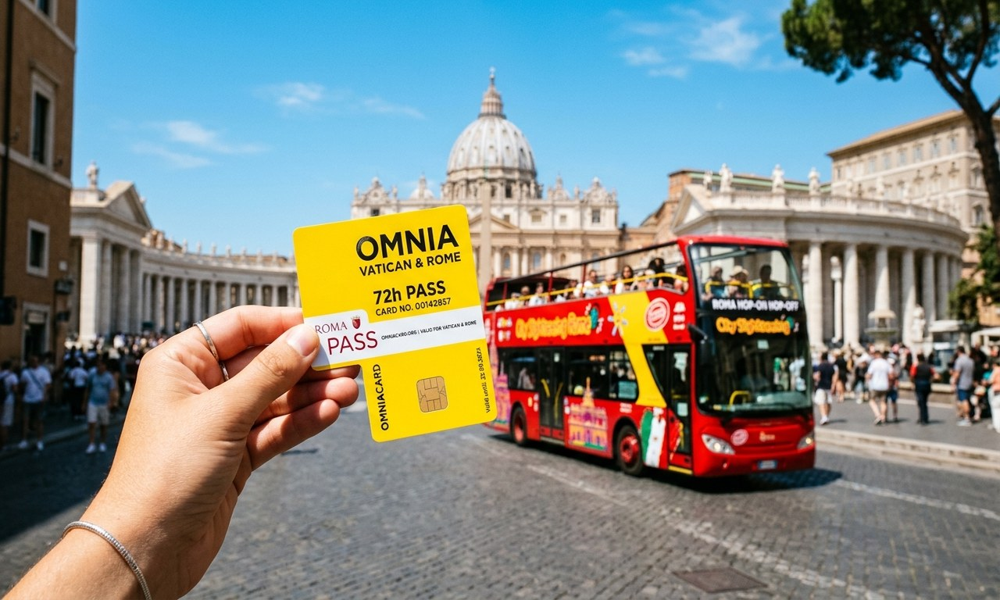

Omnia Card and Roma Pass

The Omnia Vatican and Rome Pass is one ticket at €149 that bundles two cards: an Omnia Vatican Card for the Vatican sites and a Roma Pass for the rest of the city. Together they cover skip-the-queue entry to the Vatican Museums and Sistine Chapel, free entry to two of Rome's top five sights (including the Colosseum), a 3-day hop-on hop-off bus, 72 hours of free public transport, and extra audio guides and discounts. Both cards last 72 hours from first use. It is worth it if you plan to use both free entries, the sightseeing bus, and the city transport over three full days.
Primary keywords: omnia card, roma pass, omnia vatican and rome card
The Omnia card and the Roma Pass sound like two things to choose between, but here they come as one. The Omnia Vatican and Rome Pass give you both cards together.
The Omnia Vatican Card covers the Vatican. The Roma Pass covers the Colosseum, a second top sight, and your city transport. You get two physical cards and pick them up once you reach Rome.
The real question is whether it is worth €149, and that comes down to how much you want to see. If you plan to visit the Vatican, the Colosseum, one more big sight, ride the sightseeing bus, and use the metro and buses for three days, the pass saves you money and a lot of time in line. If you only want one or two things, single tickets cost you less.
This guide shows what each card covers, works out the full price for you, and explains how to use both cards and where to collect them.
📋 In This Guide
🎟 Top Vatican Tickets & Tours
What's included in the Omnia Vatican & Rome Pass
One pass, €149 per person, valid for three consecutive days (72 hours) from first use. It comes as two cards, and here is everything they cover.
Omnia Vatican Card (the Vatican side):
- Skip-the-queue entry to the Vatican Museums and the Sistine Chapel, with a reservation required
- Entry to the Basilica of St. John in the Lateran and its cloister, with a multimedia audio guide
- Entry to the Carcer Tullianum, the Mamertine Prison (St. Peter's Prison), with a reservation required
- A 3-day hop-on hop-off sightseeing bus pass, valid on the Open Bus Vatican and Rome, Big Bus, and City Sightseeing routes
- The Vox City digital audio guide app for self-guided walks
Roma Pass (the rest of Rome) - free entry to 2 of these 5 sights:
- The Colosseum, Roman Forum and Palatine Hill (advance online reservation required)
- The Capitoline Museums
- Castel Sant'Angelo (reservation required)
- The Borghese Gallery (reservation required)
- The Circo Maximo Experience
Roma Pass also gives you:
- A 72-hour travelcard for unlimited free travel on Rome's metro, buses, and trams
- Discounted entry to a long list of other museums, including the National Roman Museum sites, Palazzo Barberini, Trajan's Market, Palazzo Valentini, Ara Pacis, MAXXI, and more
- A printed guidebook and city map
Not included: A live tour guide, hotel pickup. The pass is also not suitable for wheelchair users, because of stairs and access limits at the collection points and at sites like the Mamertine Prison.
Omnia Card vs Roma Pass: What's the Difference
The two cards do different jobs, which is why this pass gives you both.
The Omnia Vatican Card is built around the Vatican. It gets you into the Vatican Museums and Sistine Chapel without queuing to buy a ticket, plus St. John Lateran and the Mamertine Prison, and it throws in the 3-day sightseeing bus and the audio app. On its own it does not cover the Colosseum or the city's public transport.
The Roma Pass is the city of Rome's own card. It gives you free entry to a set number of top sights (two on the 72-hour version) and unlimited public transport for the same period, plus discounts at many smaller museums. It is the card that covers the Colosseum, the Forum, Palatine Hill, and the metro and buses.
So when people search "omnia card vs roma pass," the real question is whether to buy the full Omnia Vatican and Rome Pass, which contains both, or just a Roma Pass on its own.
Buy the Roma Pass alone if you only want the Colosseum, a second city sight, and transport, and you are happy to book the Vatican separately.
Buy the full Omnia pass if you want the Vatican handled too, along with the sightseeing bus. Note that St. Peter's Basilica is free to enter on its own and is not part of either card, so you do not need a pass for it. See our St. Peter's Basilica tickets guide for how that works.
Is the Omnia Card Worth It
This is the question everyone asks, so here is the plain math. The pass costs €149. If you add up what the same things cost as separate gate tickets, you get this:
| What you get | Standalone price | In the pass? |
|---|---|---|
| Vatican Museums & Sistine Chapel | ~€30 to €35 | Yes (Omnia Card) |
| Colosseum, Forum & Palatine Hill | ~€18 to €22 | Yes (Roma Pass, 1st free sight) |
| A 2nd top sight (e.g. Borghese or Castel Sant'Angelo) | ~€15 to €18 | Yes (Roma Pass, 2nd free sight) |
| 3-day hop-on hop-off bus | ~€35 to €45 | Yes (Omnia Card) |
| 72-hour public transport card | ~€24 | Yes (Roma Pass) |
| St. John Lateran & Mamertine Prison | ~€20 to €25 | Yes (Omnia Card) |
| Vox City audio guide app | ~€10 | Yes (Omnia Card) |
| Total if bought separately | ~€152 to €179 | Pass price: €149 |
So the pass is worth it, but only if you actually use the main parts. The savings come from using both free Roma Pass entries, riding the hop-on hop-off bus, and using the public transport over three full days.
If you are in Rome for a short trip, plan to walk everywhere, or only want the Vatican, you will likely spend less buying a couple of individual tickets instead. Work out the handful of sights you really want, price them up, and compare. For a full three-day, multi-sight trip the pass pays off. For a quick visit it often does not.
How to Use the Two Cards
The two cards run on separate clocks, and understanding that is how you get the most out of them. Each card is valid for 72 hours from its own first use, not from when you pick them up.
The Omnia Card starts its clock the first time you use it, such as at the Vatican Museums or boarding the sightseeing bus. The Roma Pass starts its clock separately, the first time you tap into a Roma Pass sight like the Colosseum or through a metro turnstile.
Because each card starts on its own, you do not have to use them on the same day. Activate the Omnia Card on day one for the Vatican and the bus, then leave the Roma Pass until day two, when you first use the Colosseum or the metro. This way the two 72-hour windows do not fully overlap, and the pass can cover you for about four days instead of three.
Booking Your Timed Reservations
Holding the pass does not let you walk up to the big sights without a time slot. You still need to book these in advance:
- Colosseum, Roman Forum and Palatine Hill: Reserve online through the official portal at ticketing.colosseo.it using the Roma Pass booking option. There is a small presale fee of about €2 per ticket, charged by the ticket office.
- Vatican Museums and Sistine Chapel: Book your date and time through the Omnia reservation link on your voucher before you travel.
- Borghese Gallery and Castel Sant'Angelo: Both need an advance reservation, selecting the Roma Pass holder free-entry option.
Book these as early as you can, especially the Colosseum and the Borghese Gallery, which sell out their slots well ahead in busy months. Our Vatican and Colosseum combo tour guide is worth a look if you would rather have a guide handle both of those sites for you instead.
What's Included in Transport
The 72-hour travelcard inside the Roma Pass covers a lot of the city, but not the airport. Here is what it does and does not include.
Included:
- Unlimited rides on the metro (Lines A, B/B1, and C)
- Unlimited rides on all ATAC buses and trams in the Rome city area
- Local urban train lines run by ATAC, such as the Roma-Lido line toward Ostia Antica
Not included:
- The Leonardo Express train between Fiumicino Airport and Termini
- Regional airport trains and the Ciampino airport shuttle buses
- Any sightseeing bus outside the pass's own partner routes
So plan to pay separately for your airport transfer. For the rest of your trip, the transport card and the sightseeing bus cover most of what you need. Our how to get to the Vatican guide has the metro details.
Where to Collect Your Pass
The pass is booked online, but you pick up the two physical cards in Rome. You show your voucher QR code at a collection point and swap it for the cards before you visit anything.
There are two collection points:
- Saint Peter's Square: Piazza Pio XII, 9. Open Monday to Saturday, 9:00 am to 4:00 pm.
- Lateran Palace: Piazza di S. Giovanni in Laterano. Open Monday to Saturday, 9:00 am to 4:00 pm.
Two rules catch people out. First, both desks are closed on Sundays and public holidays, so if you arrive on a Sunday, collect your cards on Saturday or plan your first use for Monday.
Second, if your Vatican Museums slot is on the same morning you collect, get to the desk at least one hour before your entry time so you can redeem the cards and walk over.
Things to Know Before You Buy
A few points before you spend €149:
- Children are often cheaper without it. Italian state sites like the Colosseum and Forum are free for under-18s, so a full €149 pass is poor value for children. Buy reduced individual Vatican tickets for kids instead. Our visiting with kids guide has more.
- You need a printer or a pickup. The pass is a voucher you exchange for physical cards, so you cannot just show your phone at the gate.
- It is not wheelchair accessible. The collection points and some sites involve stairs, so it does not suit wheelchair users. See our accessibility guide for step-free options.
- Free cancellation. You can cancel up to 24 hours before for a full refund, and there is a reserve now, pay later option, so you can lock it in while you decide.
Frequently Asked Questions
What is the difference between the Omnia card and the Roma Pass?
The Omnia Vatican Card covers the Vatican sites, the sightseeing bus, and the audio app. The Roma Pass covers free entry to two of Rome's top sights, including the Colosseum, plus public transport. The Omnia Vatican and Rome Pass sold here is both cards in one €149 package.
Is the Omnia card worth it?
It is worth it if you use both free Roma Pass entries, ride the hop-on hop-off bus, and use the public transport over three full days. Added up as separate tickets, those come to roughly €152 to €179, a little more than the €149 pass. For a short trip or a Vatican-only visit, individual tickets are usually cheaper.
Does the pass include the Colosseum?
Yes, through the Roma Pass part, as one of your two free sights. You still need to reserve a timed slot in advance at ticketing.colosseo.it, with a small presale fee of about €2.
Does it include St. Peter's Basilica?
No. St. Peter's Basilica is free to enter on its own, so it is not part of the Omnia card or the Roma Pass. You can visit it without any ticket, though a paid tour or the dome climb costs extra.
How long is the pass valid?
Each card is valid for 72 hours from its own first use. Because the Omnia Card and the Roma Pass start their clocks separately, you can use them to cover up to about four days.
Does it include airport transport?
No. The Leonardo Express to Fiumicino and the Ciampino shuttle buses are not covered. The transport card only covers the metro, buses, and trams inside the city.
Can I use the pass for my kids?
It is not worth it. Under-18s get free entry to Italian state sites like the Colosseum, so buy reduced individual Vatican tickets for children rather than the full €149 pass.
Related Vatican Visitor Guides